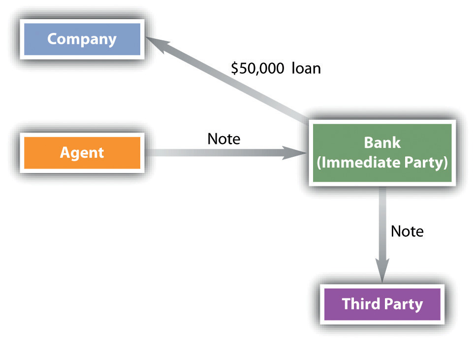
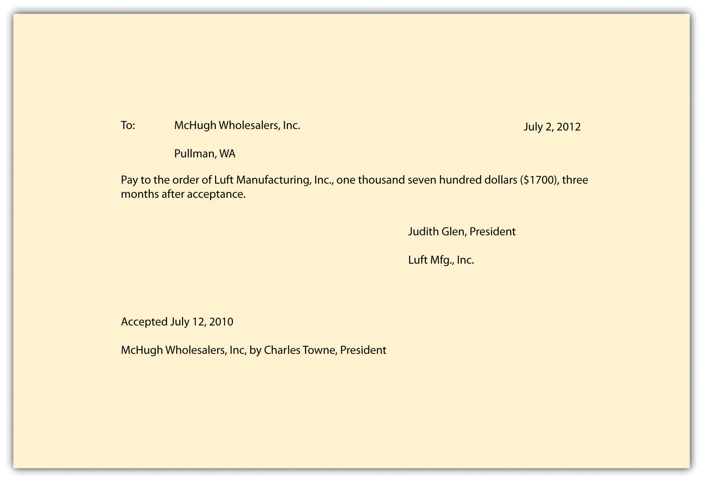

After reading this chapter, you should understand the following:
In Chapter 22 "Nature and Form of Commercial Paper", Chapter 23 "Negotiation of Commercial Paper", and Chapter 24 "Holder in Due Course and Defenses", we focused on the methods and consequences of negotiating commercial paper when all the proper steps are followed. For example, a maker gives a negotiable note to a payee, who properly negotiates the paper to a third-party holder in due course. As a result, this third party is entitled to collect from the maker, unless the latter has a real defense.
In this chapter, we begin by examining a question especially important to management: personal liability for signing company notes and checks. Then we look at the two general types of liability—contract and warranty—introduced in Chapter 23 "Negotiation of Commercial Paper". We conclude the chapter by reviewing the ways in which parties are discharged from liability.
The liability of an agent who signs commercial paper is one of the most frequently litigated issues in this area of law. For example, Igor is an agent (treasurer) of Frank N. Stein, Inc. Igor signs a note showing that the corporation has borrowed $50,000 from First Bank. The company later becomes bankrupt. The question: Is Igor personally liable on the note? The unhappy treasurer might be sued by the bank—the immediate party with whom he dealt—or by a third party to whom the note was transferred (see Figure 25.1 "Signature by Representative").
Figure 25.1 Signature by Representative
There are two possibilities regarding an agent who signs commercial paper: the agent was authorized to do so, or the agent was not authorized to do so. First, though, what is a signature?
Section 3-401 of the Uniform Commercial Code (UCC) provides fairly straightforwardly that “a signature can be made (i) manually or by means of a device or machine, and (ii) by the use of any name, including any trade or assumed name, or by any word, mark, or symbol executed or adopted by a person with the present intention to authenticate a writing.”
Agents often sign instruments on behalf of their principals, and—of course—because a corporation’s existence is a legal fiction (you can’t go up and shake hands with General Motors), corporations can only act through their agents.
Section 3-402(a) of the UCC provides that a person acting (or purporting to act) as an agent who signs an instrument binds the principal to the same extent that the principal would be bound if the signature were on a simple contract. The drafters of the UCC here punt to the common law of agency: if, under agency law, the principal would be bound by the act of the agent, the signature is the authorized signature of the principal. And the general rule in agency law is that the agent is not liable if he signs his own name and makes clear he is doing so as an agent. In our example, Igor should sign as follows: “Frank N. Stein, Inc., by Igor, Agent.” Now it is clear under agency law that the corporation is liable and Igor is not.Uniform Commercial Code, Section 4-402(b)(1). Good job, Igor.
The problems arise where the agent, although authorized, signs in an incorrect way. There are three possibilities: (1) the agent signs only his own name—“Igor”; (2) the agent signs both names but without indication of any agency—“Frank N. Stein, Inc., / Igor” (the signature is ambiguous—are both parties to be liable, or is Igor merely an agent?); (3) the agent signs as agent but doesn’t identify the principal—“Igor, Agent.”
The UCC provides that in each case, the agent is liable to a holder in due course (HDC) who took the instrument without notice that the agent wasn’t intended to be liable on the instrument. As to any other person (holder or transferee), the agent is liable unless she proves that the original parties to the instrument did not intend her to be liable on it. Section 3-402(c) says that, as to a check, if an agent signs his name without indicating agency status but the check has the principal’s identification on it (that would be in the upper left corner), the authorized agent is not liable.
A person who has no authority to sign an instrument cannot really be an “agent” because by definition an agent is a person or entity authorized to act on behalf of and under the control of another in dealing with third parties. Nevertheless, unauthorized persons not infrequently purport to act as agents: either they are mistaken or they are crooks. Are their signatures binding on the “principal”?
An unauthorized signature is not binding; it is—as the UCC puts it—“ineffective except as the signature of the unauthorized signer.”Uniform Commercial Code, Section 3-403. So if Crook signs a Frank N. Stein, Inc., check with the name “Igor,” the only person liable on the check is Crook.
There are two exceptions. Section 4-403(a) of the UCC provides that an unauthorized signature may be ratified by the principal, and Section 3-406 says that if negligence contributed to an instrument’s alteration or forgery, the negligent person cannot assert lack of authority against an HDC or a person who in good faith pays or takes the instrument for value or for collection. This is the situation where Principal leaves the rubber signature stamp lying about and Crook makes mischief with it, making out a check to Payee using the stamp. But if Payee herself failed to exercise reasonable care in taking a suspicious instrument, both Principal and Payee could be liable, based on comparative negligence principles.Uniform Commercial Code, Section 3-406(b).
Under the UCC, a “signature” is any writing or mark used by a person to indicate that a writing is authentic. Agents often sign on behalf of principals, and when the authorized agent makes clear that she is so signing—by naming the principal and signing her name as “agent”—the principal is liable, not the agent. But when the agent signs incorrectly, the UCC says, in general, that the agent is personally liable to an HDC who takes the paper without notice that the agent is not intended to be liable. Unauthorized signatures (forgeries) are ineffective as to the principal: they are effective as the forger’s signature, unless the principal or the person paying on the instrument has been negligent in contributing to, or in failing to notice, the forgery, in which case comparative negligence principles are applied.
Two types of liability can attach to those who deal in commercial paper: contract liability and warranty liability. Contract liability is based on a party’s signature on the paper. For contract liability purposes, signing parties are divided into two categories: primary parties and secondary parties.
We discuss here the liability of various parties. You may recall the discussion in Chapter 22 "Nature and Form of Commercial Paper" about accommodation parties. An accommodation party signs a negotiable instrument in order to lend his name to another party to the instrument. The Uniform Commercial Code (UCC) provides that such a person “may sign the instrument as maker, drawer, acceptor, or indorser” and that in whatever capacity the person signs, he will be liable in that capacity.Uniform Commercial Code, Section 3-419.
Two parties are primarily liable: the maker of a note and the acceptor of a draft. They are required to pay by the terms of the instrument itself, and their liability is unconditional.
By signing a promissory note, the maker promises to pay the instrument—that’s the maker’s contract and, of course, the whole point to a note. The obligation is owed to a person entitled to enforce the note or to an indorser that paid the note.Uniform Commercial Code, Section 3-412.
Recall that acceptance is the drawee’s signed engagement to honor a draft as presented. The drawee’s signature on the draft is necessary and sufficient to accept, and if that happens, the drawee as acceptor is primarily liable. The acceptance must be written on the draft by some means—any means is good. The signature is usually accompanied by some wording, such as “accepted,” “good,” “I accept.” When a bank certifies a check, that is the drawee bank’s acceptance, and the bank as acceptor becomes liable to the holder; the drawer and all indorsers prior to the bank’s acceptance are discharged. So the holder—whether a payee or an indorsee—can look only to the bank, not to the drawer, for payment.Uniform Commercial Code, Section 3-414(b). If the drawee varies the terms when accepting the draft, it is liable according to the terms as varied.Uniform Commercial Code, Section 3-413(a)(iii).
Unlike primary liability, secondary liability is conditional, arising only if the primarily liable party fails to pay. The parties for whom these conditions are significant are the drawers and the indorsers. By virtue of UCC Sections 3-414 and 3-415, drawers and indorsers engage to pay the amount of an unaccepted draft to any subsequent holder or indorser who takes it up, again, if (this is the conditional part) the (1) the instrument is dishonored and, in some cases, (2) notice of dishonor is given to the drawer or indorser.
If Carlos writes (more properly “draws”) a check to his landlord for $700, Carlos does not expect the landlord to turn around and approach him for the money: Carlos’s bank—the drawee—is supposed to pay from Carlos’s account. But if the bank dishonors the check—most commonly because of insufficient funds to pay it—then Carlos is liable to pay according to the instrument’s terms when he wrote the check or, if it was incomplete when he wrote it, according to its terms when completed (subject to some limitations).Uniform Commercial Code, Section 3-414. Under the pre-1997 UCC, Carlos’s liability was conditioned not only upon dishonor but also upon notice of dishonor; however, under the revised UCC, notice is not required for the drawer to be liable unless the draft has been accepted and the acceptor is not a bank. Most commonly, if a check bounces, the person who wrote it is liable to make it good.
The drawer of a noncheck draft may disclaim her contractual liability on the instrument by drawing “without recourse.”Uniform Commercial Code, Section 3-414(d).
Under UCC Section 3-415, an indorser promises to pay on the instrument according to its terms if it is dishonored or, if it was incomplete when indorsed, according to its terms when completed. The liability here is conditioned upon the indorser’s receipt of notice of dishonor (with some exceptions, noted in Section 25.2 "Contract Liability of Parties" on contract liability of parties. Indorsers may disclaim contractual liability by indorsing “without recourse.”Uniform Commercial Code, Section 3-415(b).
We have alluded to the point that secondary parties do not become liable unless the proper conditions are met—there are conditions precedent to liability (i.e., things have to happen before liability “ripens”).
The conditions are slightly different for two classes of instruments. For an unaccepted draft, the drawer’s liability is conditioned on (1) presentment and (2) dishonor. For an accepted draft on a nonbank, or for an indorser, the conditions are (1) presentment, (2) dishonor, and (3) notice of dishonor.
PresentmentA holder’s demand for payment from a payor. occurs when a person entitled to enforce the instrument (creditor) demands payment from the maker, drawee, or acceptor, or when a person entitled to enforce the instrument (again, the creditor) demands acceptance of a draft from the drawee.Uniform Commercial Code, Section 3-501.
The common-law tort that makes a person who wrongfully takes another’s property liable for that taking is conversionWrongful possession or disposition of another’s property as if it were one’s own.—it’s the civil equivalent of theft. The UCC provides that “the law applicable to conversion of personal property applies to instruments.”Uniform Commercial Code, Section 3-420. Conversion is relevant here because if an instrument is presented for payment or acceptance and the person to whom it is presented refuses to pay, accept, or return it, the instrument is converted. An instrument is also converted if a person pays an instrument on a forged indorsement: a bank that pays a check on a forged indorsement has converted the instrument and is liable to the person whose indorsement was forged. There are various permutations on the theme of conversion; here is one example from the Official Comment:
A check is payable to the order of A. A indorses it to B and puts it into an envelope addressed to B. The envelope is never delivered to B. Rather, Thief steals the envelope, forges B’s indorsement to the check and obtains payment. Because the check was never delivered to B, the indorsee, B has no cause of action for conversion, but A does have such an action. A is the owner of the check. B never obtained rights in the check. If A intended to negotiate the check to B in payment of an obligation, that obligation was not affected by the conduct of Thief. B can enforce that obligation. Thief stole A’s property not B’s.Uniform Commercial Code, Section 3-420, Official Comment 1.
DishonorRefusal to pay or accept an instrument when it is presented. generally means failure by the obligor to pay on the instrument when presentment for payment is made (but return of an instrument because it has not been properly indorsed does not constitute dishonor). The UCC at Section 3-502 has (laborious) rules governing what constitutes dishonor and when dishonor occurs for a note, an unaccepted draft, and an unaccepted documentary draft. (A documentary draft is a draft to be presented for acceptance or payment if specified documents, certificates, statements, or the like are to be received by the drawee or other payor before acceptance or payment of the draft.)
Again, when acceptance or payment is refused after presentment, the instrument is said to be dishonored. The holder has a right of recourse against the drawers and indorsers, but he is usually supposed to give notice of the dishonor. Section 3-503(a) of the UCC requires the holder to give notice to a party before the party can be charged with liability, unless such notice is excused, but the UCC exempts notice in a number of circumstances (Section 3-504, discussed in Section 25.2 "Contract Liability of Parties" on contract liability). The UCC makes giving notice pretty easy: it permits any party who may be compelled to pay the instrument to notify any party who may be liable on it (but each person who is to be charged with liability must actually be notified); notice of dishonor may “be given by any commercially reasonable means including an oral, written, or electronic communication”; and no specific form of notice is required—it is “sufficient if it reasonably identifies the instrument and indicates that the instrument has been dishonored or has not been paid or accepted.”Uniform Commercial Code, Section 3-503(b). Section 3-503(c) sets out time limits when notice of dishonor must be given for collecting banks and for other persons. An oral notice is unwise because it might be difficult to prove. Usually, notice of dishonor is given when the instrument is returned with a stamp (“NSF”—the dreaded “nonsufficient funds”), a ticket, or a memo.
Suppose—you’ll want to graph this out—Ann signs a note payable to Betty, who indorses it to Carl, who in turn indorses it to Darlene. Darlene indorses it to Earl, who presents it to Ann for payment. Ann refuses. Ann is the only primary party, so if Earl is to be paid he must give notice of dishonor to one or more of the secondary parties, in this case, the indorsers. He knows that Darlene is rich, so he notifies only Darlene. He may collect from Darlene but not from the others. If Darlene wishes to be reimbursed, she may notify Betty (the payee) and Carl (a prior indorser). If she fails to notify either of them, she will have no recourse. If she notifies both, she may recover from either. Carl in turn may collect from Betty, because Betty already will have been notified. If Darlene notifies only Carl, then she may collect only from him, but he must notify Betty or he cannot be reimbursed. Suppose Earl notified only Betty. Then Carl and Darlene are discharged. Why? Earl cannot proceed against them because he did not notify them. Betty cannot proceed against them because they indorsed subsequent to her and therefore were not contractually obligated to her. However, if, mistakenly believing that she could collect from either Carl or Darlene, Betty gave each notice within the time allowed to Earl, then he would be entitled to collect from one of them if Betty failed to pay, because they would have received notice. It is not necessary to receive notice from one to whom you are liable; Section 3-503(b) says that notice may be given by any person, so that notice operates for the benefit of all others who have rights against the obligor.
There are some deadlines for giving notice: on an instrument taken for collection, a bank must give notice before midnight on the next banking day following the day on which it receives notice of dishonor; a nonbank must give notice within thirty days after the day it received notice; and in all other situations, the deadline is thirty days after the day dishonor occurred.Uniform Commercial Code, Section 3-503(c).
Presentment and notice of dishonor have been discussed as conditions precedent for imposing liability upon secondarily liable parties (again, drawers and indorsers). But the UCC provides circumstances in which such conditions may be waived or excused.
Under UCC Section 3-504(a), presentment is excused if (1) the creditor cannot with reasonable diligence present the instrument; (2) the maker or acceptor has repudiated the obligation to pay, is dead, or is in insolvency proceedings; (3) no presentment is necessary by the instrument’s terms; (4) the drawer or indorsers waived presentment; (5) the drawer instructed the drawee not to pay or accept; or (6) the drawee was not obligated to the drawer to pay the draft.
Notice of dishonor is not required if (1) the instrument’s terms do not require it or (2) the debtor waived the notice of dishonor. Moreover, a waiver of presentment is also a waiver of notice of dishonor. Delay in giving the notice is excused, too, if it is caused by circumstances beyond the control of the person giving notice and she exercised reasonable diligence when the cause of delay stopped.Uniform Commercial Code, Section 3-504.
In fact, in real life, presentment and notice of dishonor don’t happen very often, at least as to notes. Going back to presentment for a minute: the UCC provides that the “party to whom presentment is made [the debtor] may require exhibition of the instrument,…reasonable identification of the person demanding payment,…[and] a signed receipt [from the creditor (among other things)]” (Section 3-501). This all makes sense: for example, certainly the prudent contractor paying on a note for his bulldozer wants to make sure the creditor actually still has the note (hasn’t negotiated it to a third party) and is the correct person to pay, and getting a signed receipt when you pay for something is always a good idea. “Presentment” here is listed as a condition of liability, but in fact, most of the time there is no presentment at all:
[I]t’s a fantasy. Every month millions of homeowners make payments on the notes that they signed when they borrowed money to buy their houses. Millions of college graduates similarly make payments on their student loan notes. And millions of drivers and boaters pay down the notes that they signed when they borrowed money to purchase automobiles or vessels. [Probably] none of these borrowers sees the notes that they are paying. There is no “exhibition” of the instruments as section 3-501 [puts it]. There is no showing of identification. In some cases…there is no signing of a receipt for payment. Instead, each month, the borrowers simply mail a check to an address that they have been given.Gregory E. Maggs, “A Complaint about Payment Law Under the U.C.C.: What You See Is Often Not What You Get,” Ohio State Law Journal 68, no. 201, no. 207 (2007), http://ssrn.com/abstract=1029647.
The Official Comment to UCC Section 5-502 says about the same thing:
In the great majority of cases presentment and notice of dishonor are waived with respect to notes. In most cases a formal demand for payment to the maker of the note is not contemplated. Rather, the maker is expected to send payment to the holder of the note on the date or dates on which payment is due. If payment is not made when due, the holder usually makes a demand for payment, but in the normal case in which presentment is waived, demand is irrelevant and the holder can proceed against indorsers when payment is not received.
People who sign commercial paper become liable on the instrument by contract: they contract to honor the instrument. There are two types of liability: primary and secondary. The primarily liable parties are makers of notes and drawees of drafts (your bank is the drawee for your check), and their liability is unconditional. The secondary parties are drawers and indorsers. Their liability is conditional: it arises if the instrument has been presented for payment or collection by the primarily liable party, the instrument has been dishonored, and notice of dishonor is provided to the secondarily liable parties. The presentment and notice of dishonor are often unnecessary to enforce contractual liability.
We discussed the contract liability of primary and secondary parties, which applies to those who sign the instrument. Liability arises a second way, too—by warranty. A negotiable instrument is a type of property that is sold and bought, just the way an automobile is, or a toaster. If you buy a car, you generally expect that it will, more or less, work the way cars are supposed to work—that’s the implied warranty of merchantability. Similarly, when an instrument is transferred from A to B for consideration, the transferee (B) expects that the instrument will work the way such instruments are supposed to work. If A transfers to B a promissory note made by Maker, B figures that when the time is right, she can go to Maker and get paid on the note. So A makes some implied warranties to B—transfer warranties. And when B presents the instrument to Maker for payment, Maker assumes that B as the indorsee from A is entitled to payment, that the signatures are genuine, and the like. So B makes some implied warranties to Maker—presentment warranties. Usually, claims of breach of warranty arise in cases involving forged, altered, or stolen instruments, and they serve to allocate the loss to the person in the best position to have avoided the loss, putting it on the person (or bank) who dealt with the wrongdoer. We take up both transfer and presentment warranties.
Transfer warranties are important because—as we’ve seen—contract liability is limited to those who have actually signed the instrument. Of course, secondary liability will provide a holder with sufficient grounds for recovery against a previous indorser who did not qualify his indorsement. But sometimes there is no indorsement, and sometimes the indorsement is qualified. Sometimes, also, the holder fails to make timely presentment or notice of dishonor, thereby discharging a previous indorsee. In such cases, the transferee-holder can still sue a prior party on one or more of the five implied warranties.
A person who receives consideration for transferring an instrument makes the five warranties listed in UCC Section 3-416. The warranty may be sued on by the immediate transferee or, if the transfer was by indorsement, by any subsequent holder who takes the instrument in good faith. The warranties thus run with the instrument. They are as follows:
A payor paying or accepting an instrument in effect takes the paper from the party who presents it to the payor, and that party has his hand out. In doing so, the presenter makes certain implied promises to the payor, who is about to fork over cash (or an acceptance). The UCC distinguishes between warranties made by one who presents an unaccepted draft for payment and warranties made by one who presents other instruments for payment. The warranties made by the presenter are as follows.Uniform Commercial Code, Section 3-417.
These rules apply—again—to warranties made by the presenter to a drawee paying out on an unaccepted draft. The most common situation would be where a person has a check made out to her and she gets it cashed at the drawer’s bank.
In all other cases, there is only one warranty made by the presenter: that he or she is a person entitled to enforce the instrument or obtain payment on it.
This applies to the presentment of accepted drafts, to the presentment of dishonored drafts made to the drawer or an indorser, and to the presentment of notes. For example, Maker makes a note payable to Payee; Payee indorses the note to Indorsee, Indorsee indorses and negotiates the note to Subsequent Party. Subsequent Party presents the note to Maker for payment. The Subsequent Party warrants to Maker that she is entitled to obtain payment. If she is paid and is not entitled to payment, Maker can sue her for breach of that warranty. If the reason she isn’t entitled to payment is because Payee’s signature was forged by Thief, then Maker can go after Thief: the UCC says that “the person obtaining payment [Subsequent Party] and a prior transferor [Thief] warrant to the person making payment in good faith [Maker] that the warrantor [Subsequent Party] is entitled to enforce the instrument.”Uniform Commercial Code, Section 3-417(d). Or, again, Drawer makes the check out to Payee; Payee attempts to cash or deposit the check, but it is dishonored. Payee presents the check to Drawer to make it good: Payee warrants he is entitled to payment on it.
Warranties cannot be disclaimed in the case of checks (because, as UCC Section 3-417, Comment 7, puts it, “it is not appropriate to allow disclaimer of warranties appearing on checks that normally will not be examined by the payor bank”—they’re machine read). But a disclaimer of warranties is permitted as to other instruments, just as disclaimers of warranty are usually OK under general contract law. The reason presentment warranties 2 and 3 don’t apply to makers and drawers (they apply to drawees) is because makers and drawers are going to know their own signatures and the terms of the instruments; indorsers already warranted the wholesomeness of their transfer (transfer warranties), and acceptors should examine the instruments when they accept them.
Sometimes a drawee pays a draft (most familiarly, again, a bank pays a check) or accepts a draft by mistake. The UCC says that if the mistake was in thinking that there was no stop-payment order on it (when there was), or that the drawer’s signature was authorized (when it was not), or that there were sufficient funds in the drawer’s account to pay it (when there were not), “the drawee may recover the amount paid…or in the case of acceptance, may revoke the acceptance.”Uniform Commercial Code, Section 3-418. Except—and it’s a big exception—such a recovery of funds does not apply “against a person who took the instrument in good faith and for value.”Uniform Commercial Code, Section 3-418(c). The drawee in that case would have to go after the forger, the unauthorized signer, or, in the case of insufficient funds, the drawer. Example: Able draws a check to Baker. Baker deposits the check in her bank account, and Able’s bank mistakenly pays it even though Able doesn’t have enough money in his account to cover it. Able’s bank cannot get the money back from Baker: it has to go after Able. To rephrase, in most cases, the remedy of restitution will not be available to a bank that pays or accepts a check because the person receiving payment of the check will have given value for it in good faith.
A transferor of a negotiable instrument warrants to the transferee five things: (1) entitled to enforce, (2) authentic and authorized signatures, (3) no alteration, (4) no defenses, and (5) no knowledge of insolvency. If the transfer is by delivery, the warranties run only to the immediate transferee; if by indorsement, to any subsequent good-faith holder. Presenters who obtain payment of an instrument and all prior transferors make three presenter’s warranties: (1) entitled to enforce, (2) no alteration, (3) genuineness of drawer’s signature. These warranties run to any good-faith payor or acceptor. If a person pays or accepts a draft by mistake, he or she can recover the funds paid out unless the payee took the instrument for value and in good faith.
Negotiable instruments eventually die. The obligations they represent are discharged (terminated) in two general ways: (1) according to the rules stated in Section 3-601 of the Uniform Commercial Code (UCC) or (2) by an act or agreement that would discharge an obligation to pay money under a simple contract (e.g., declaring bankruptcy).
The UCC provides a number of ways by which an obligor on an instrument is discharged from liability, but notwithstanding these several ways, under Section 3-601, no discharge of any party provided by the rules presented in this section operates against a subsequent holder in due course unless she has notice when she takes the instrument.
A person primarily liable discharges her liability on an instrument to the extent of payment by paying or otherwise satisfying the holder, and the discharge is good even if the payor knows that another has claim to the instrument. However, discharge does not operate if the payment is made in bad faith to one who unlawfully obtained the instrument (and UCC Section 3-602(b) lists two other exceptions).
A person who tenders full payment to a holder on or after the date due discharges any subsequent liability to pay interest, costs, and attorneys’ fees (but not liability for the face amount of the instrument). If the holder refuses to accept the tender, any party who would have had a right of recourse against the party making the tender is discharged. Mario makes a note payable to Carol, who indorses it to Ed. On the date the payment is due, Mario (the maker) tenders payment to Ed, who refuses to accept the payment; he would rather collect from Carol. Carol is discharged: had she been forced to pay as indorser in the event of Mario’s refusal, she could have looked to him for recourse. Since Mario did tender, Ed can no longer look to Carol for payment.Uniform Commercial Code, Section 3-603(b).
The holder may discharge any party, even without consideration, by marking the face of the instrument or the indorsement in an unequivocal way, as, for example, by intentionally canceling the instrument or the signature by destruction or mutilation or by striking out the party’s signature. The holder may also renounce his rights by delivering a signed writing to that effect or by surrendering the instrument itself.Uniform Commercial Code, Section 3-604.
Under UCC Section 3-407, if a holder materially and fraudulently alters an instrument, any party whose contract is affected by the change is discharged. A payor bank or drawee paying a fraudulently altered instrument or a person taking it for value, in good faith, and without notice of the alteration, may enforce rights with respect to the instrument according to its original terms or, if the incomplete instrument was altered by unauthorized completion, according to its terms as completed.
As we have noted, where a drawee certifies a draft for a holder, the drawer and all prior indorsers are discharged.
If the holder assents to an acceptance varying the terms of a draft, the obligation of the drawer and any indorsers who do not expressly assent to the acceptance is discharged.Uniform Commercial Code, Section 3-410.
The liability of indorsers and accommodation parties is discharged under the following three circumstances.Uniform Commercial Code, Section 3-605.
If the holder agrees to an extension of the due date of the obligation of the obligor, the extension discharges an indorser or accommodation party having a right of recourse against the obligor to the extent the indorser or accommodation party proves that the extension caused her loss with respect to the right of recourse.
If the holder agrees to a material modification of the obligor’s obligation, other than an extension of the due date, the modification discharges the obligation of an indorser or accommodation party having a right of recourse against the obligor to the extent the modification causes her loss with respect to the right of recourse.
If the obligor’s duty to pay is secured by an interest in collateral and the holder impairs the value of the interest in collateral, the obligation of an indorser or accommodation party having a right of recourse against the obligor is discharged to the extent of the impairment.
The following explanatory paragraph from UCC Section 3-605, Official Comment 1, may be helpful:
Bank lends $10,000 to Borrower who signs a note under which she (in suretyship law, the “Principal Debtor”) agrees to pay Bank on a date stated. But Bank insists that an accommodation party also become liable to pay the note (by signing it as a co-maker or by indorsing the note). In suretyship law, the accommodation party is a “Surety.” Then Bank agrees to a modification of the rights and obligations between it and Principal Debtor, such as agreeing that she may pay the note at some date after the due date, or that she may discharge her $10,000 obligation to pay the note by paying Bank $3,000, or the Bank releases collateral she gave it to secure the note. Surety is discharged if changes like this are made by Bank (the creditor) without Surety’s consent to the extent Surety suffers loss as a result. Section 3-605 is concerned with this kind of problem with Principal Debtor and Surety. But it has a wider scope: it also applies to indorsers who are not accommodation parties. Unless an indorser signs without recourse, the indorser’s liability under section 3-415(a) is that of a surety. If Bank in our hypothetical case indorsed the note and transferred it to Second Bank, Bank has rights given to an indorser under section 3-605 if it is Second Bank that modifies rights and obligations of Borrower.
Suppose a prior party reacquires the instrument. He may—but does not automatically—cancel any indorsement unnecessary to his title and may also reissue or further negotiate the instrument. Any intervening party is thereby discharged from liability to the reacquiring party or to any subsequent holder not in due course. If an intervening party’s indorsement is cancelled, she is not liable even to an HDC.Uniform Commercial Code, Section 3-207.
If notice of dishonor is not excused under UCC Section 3-504, failure to give it discharges drawers and indorsers.
The potential liabilities arising from commercial paper are discharged in several ways. Anything that would discharge a debt under common contract law will do so. More specifically as to commercial paper, of course, payment discharges the obligation. Other methods include tender of payment, cancellation or renunciation, material and fraudulent alteration, certification, acceptance varying a draft, reacquisition, and—in some cases—unexcused delay in giving notice of presentment or dishonor. Indorsers and accommodation parties’ liability may be discharged by the same means that a surety’s liability is discharged, to the extent that alterations in the agreement between the creditor and the holder would be defenses to a surety because right of recourse is impaired to the surety.
Bank of Nichols Hills v. Bank of Oklahoma
196 P.3d 984 (Okla. Civ. App. 2008)
Gabbard, J.
Plaintiff, Bank of Nichols Hills (BNH), appeals a trial court judgment for Defendant, Bank of Oklahoma (BOK), regarding payment of a forged check. The primary issue on appeal is whether BOK presented sufficient proof to support the trial court’s finding that the [UCC] § 3-406 preclusion defense applied. We find that it did, and affirm.
Michael and Stacy Russell owned a mobile home in Harrah, Oklahoma. The home was insured by Oklahoma Farm Bureau Mutual Insurance Company (Farm Bureau). The insurance policy provided that in case of loss, Farm Bureau “will pay you unless another payee is named on the Declarations page,” that “Loss shall be payable to any mortgagee named in the Declarations,” and that one of Farm Bureau’s duties was to “protect the mortgagee’s interests in the insured building.” The Declarations page of the policy listed Conseco Finance as the mortgagee. Conseco had a mortgage security interest in the home.
In August 2002, a fire completely destroyed the mobile home. The Russells submitted an insurance claim to Farm Bureau. Farm Bureau then negotiated a $69,000 settlement with the Russells, issued them a check in this amount payable to them and Conseco jointly, and mailed the check to the Russells. Neither the Russells nor Farm Bureau notified Conseco of the loss, the settlement, or the mailing of the check.
The check was drawn on Farm Bureau’s account at BNH. The Russells deposited the check into their account at BOK. The check contains an endorsement by both Russells, and a rubber stamp endorsement for Conseco followed by a signature of a Donna Marlatt and a phone number. It is undisputed that Conseco’s endorsement was forged. Upon receipt, BOK presented the check to BNH. BNH paid the $69,000 check and notified Farm Bureau that the check had been paid from its account.
About a year later, Conseco learned about the fire and the insurance payoff. Conseco notified Farm Bureau that it was owed a mortgage balance of more than $50,000. Farm Bureau paid off the balance and notified BNH of the forgery. BNH reimbursed Farm Bureau the amount paid to Conseco. BNH then sued BOK.
Both banks relied on the Uniform Commercial Code. BNH asserted that under § 4-208, BOK had warranted that all the indorsements on the check were genuine. BOK asserted an affirmative defense under § 3-406, alleging that Farm Bureau’s own negligence contributed to the forgery. After a non-jury trial, the court granted judgment to BOK, finding as follows:
From this judgment, BNH appeals.
It cannot be disputed that BOK breached its presentment warranty to BNH under § 4-208.Section 4-208 provides as follows: “(a) If an unaccepted draft is presented [in this case, by BOK] to the drawee [BNH] for payment or acceptance and the drawee pays or accepts the draft,(i) the person obtaining payment or acceptance, at the time of presentment, and(ii) a previous transferor of the draft, at the time of transfer, warrant to the drawee that pays or accepts the draft in good faith, that:(1) The warrantor is, or was, at the time the warrantor transferred the draft, a person entitled to enforce the draft or authorized to obtain payment or acceptance of the draft on behalf of a person entitled to enforce the draft;(2) The draft has not been altered; and(3) The warrantor has no knowledge that the signature of the purported drawer of the draft is unauthorized.(b) A drawee making payment may recover from a warrantor damages for breach of warranty.…(c) If a drawee asserts a claim for breach of warranty under subsection (a) of this section based on an unauthorized indorsement of the draft or an alteration of the draft, the warrantor may defend by proving that…the drawer [here, Farm Bureau] is precluded under Section 3-406 or 4-406 of this title from asserting against the drawee the unauthorized indorsement or alteration.” Thus the primary issue raised is whether BOK established a preclusion defense under 3-406 [that BNH is precluded from complaining about BOK’s breach of presentment warranty because of its own negligence].(a) A person whose failure to exercise ordinary care substantially contributes to an alteration of an instrument or to the making of a forged signature on an instrument is precluded from asserting the alteration or the forgery against a person who, in good faith, pays the instrument or takes it for value or for collection. BNH asserts that the evidence fails to establish this defense because the mailing of its check to and receipt by the insured “is at most an event of opportunity and has nothing to do with the actual forgery.”
Section 3-406 requires less stringent proof than the “direct and proximate cause” test for general negligence.The parties do not address Section 3-406(b), which states that the person asserting preclusion may be held partially liable under comparative negligence principles for failing to exercise ordinary care in paying or taking the check. They also do not address any possible negligence by either bank in accepting the forged check without confirming the legitimacy of Conseco’s indorsement. Conduct is a contributing cause of an alteration or forgery if it is a substantial factor in bringing it about, or makes it “easier for the wrongdoer to commit his wrong.” The UCC Comment to § 3-406 notes that the term has the meaning as used by the Pennsylvania court in Thompson [Citation].
In Thompson, an independent logger named Albers obtained blank weighing slips, filled them out to show fictitious deliveries of logs for local timber owners, delivered the slips to the company, accepted checks made payable to the timber owners, forged the owners’ signatures, and cashed the checks at the bank. When the company discovered the scheme, it sued the bank and the bank raised § 3-406 as a defense. The court specifically found that the company’s negligence did not have to be the direct and proximate cause of the bank’s acceptance of the forged checks. Instead, the defense applied because the company left blank logging slips readily accessible to haulers, the company had given Albers whole pads of blank slips, the slips were not consecutively numbered, haulers were allowed to deliver both the original and duplicate slips to the company’s office, and the company regularly entrusted the completed checks to the haulers for delivery to the payees without the payees’ consent. The court noted:
While none of these practices, in isolation, might be sufficient to charge the plaintiff [the company] with negligence within the meaning of § 3-406, the company’s course of conduct, viewed in its entirety, is surely sufficient to support the trial judge’s determination that it substantially contributed to the making of the unauthorized signatures.…[T]hat conduct was ‘no different than had the plaintiff simply given Albers a series of checks signed in blank for his unlimited, unrestrictive use.’
The UCC Comment to § 3-406 gives three examples of conduct illustrating the defense. One example involves an employer who leaves a rubber stamp and blank checks accessible to an employee who later commits forgery; another example involves a company that issues a ten dollar check but leaves a blank space after the figure which allows the payee to turn the amount into ten thousand dollars; and the third example involves an insurance company that mails a check to one policyholder whose name is the same as another policyholder who was entitled to the check. In each case, the company’s negligence substantially contributed to the alterations or forgeries by making it easier for the wrongdoer to commit the malfeasance.
In the present case, we find no negligence in Farm Bureau’s delivery of the check to the Russells. There is nothing in the insurance policy that prohibits the insurer from making the loss-payment check jointly payable to the Russells and Conseco. Furthermore, under § 3-420, if a check is payable to more than one payee, delivery to one of the payees is deemed to be delivery to all payees. The authority cited by BOK, in which a check was delivered to one joint payee who then forged the signature of the other, involve cases where the drawer knew or should have known that the wrongdoer was not entitled to be a payee in the first place. See [Citations].
We also find no negligence in Farm Bureau’s violation of its policy provisions requiring the protection of the mortgage holder. Generally, violation of contract provisions and laxity in the conduct of the business affairs of the drawer do not per se establish negligence under this section. See [Citations].
However, evidence was presented that the contract provision merely reflected an accepted and customary commercial standard in the insurance industry. Failure to conform to the reasonable commercial standards of one’s business has been recognized by a number of courts as evidence of negligence. See, e.g., [Citations].
Here, evidence was presented that Farm Bureau did not act in a commercially reasonable manner or in accordance with reasonable commercial standards of its business when it issued the loss check to the insured without notice to the mortgagee. BOK’s expert testified that it is standard practice in the industry to notify the lender of a loss this size, in order to avoid exactly the result that occurred here. Mortgagees often have a greater financial stake in an insurance policy than do the mortgagors. That was clearly true in this case. While there was opinion testimony to the contrary, the trial court was entitled to conclude that Farm Bureau did not act in a commercially reasonably manner and that this failure was negligence which substantially contributed to the forgery, as contemplated by § 3-406.
We find the trial court’s judgment supported by the law and competent evidence. Accordingly, the trial court’s decision is affirmed. Affirmed.
Messing v. Bank of America
821 A.2d 22 (Md. 2003)
At some point in time prior to 3 August 2000, Petitioner, as a holder, came into possession of a check in the amount of Nine Hundred Seventy-Six Dollars ($976.00) (the check) from Toyson J. Burruss, the drawer, doing business as Prestige Auto Detail Center. Instead of depositing the check into his account at his own bank, Petitioner elected to present the check for payment at a branch of Mr. Burruss’ bank, Bank of America, the drawee.Petitioner’s choice could be viewed as an attempt at risk shifting. Petitioner, an attorney, may have known that he could have suffered a fee charged by his own bank if he deposited a check into his own account and then the bank on which it was drawn returned it for insufficient funds, forged endorsement, alteration, or the like. Petitioner’s action, viewed against that backdrop, would operate as a risk-shifting strategy, electing to avoid the risk of a returned-check fee by presenting in person the check for acceptance at the drawee bank. On 3 August 2000, Petitioner approached a teller at Bank of America…in Baltimore City and asked to cash the check. The teller, by use of a computer, confirmed the availability of funds on deposit, and placed the check into the computer’s printer slot. The computer stamped certain data on the back of the check, including the time, date, amount of the check, account number, and teller number. The computer also effected a hold on the amount of $976.00 in the customer’s account. The teller gave the check back to the Petitioner, who endorsed it. The teller then asked for Petitioner’s identification. Petitioner presented his driver’s license and a major credit card. The teller took the indorsed check from Petitioner and manually inscribed the driver’s license information and certain credit card information on the back of the check.
At some point during the transaction, the teller counted out $976.00 in cash from her drawer in anticipation of completing the transaction. She asked if the Petitioner was a customer of Bank of America. The Petitioner stated that he was not. The teller returned the check to Petitioner and requested, consistent with bank policy when cashing checks for non-customers, that Petitioner place his thumbprint on the check. [The thumbprint identification program was designed by various banking and federal agencies to reduce check fraud.] Petitioner refused and the teller informed him that she would be unable to complete the transaction without his thumbprint.
…Petitioner presented the check to the branch manager and demanded that the check be cashed notwithstanding Petitioner’s refusal to place his thumbprint on the check. The branch manager examined the check and returned it to the Petitioner, informing him that, because Petitioner was a non-customer, Bank of America would not cash the check without Petitioner’s thumbprint on the instrument.…Petitioner left the bank with the check in his possession.…
Rather than take the check to his own bank and deposit it there, or returning it to Burruss, the drawer, as dishonored and demanding payment, Petitioner,…[sued] Bank of America (the Bank)…Petitioner claimed that the Bank had violated the Maryland Uniform Commercial Code (UCC) and had violated his personal privacy when the teller asked Petitioner to place an “inkless” thumbprint on the face of the check at issue.…
…[T]he Circuit Court heard oral arguments…, entered summary judgment in favor of the Bank, dismissing the Complaint with prejudice. [The special appeals court affirmed. The Court of Appeals—this court—accepted the appeal.]
[Duty of Bank on Presentment and Acceptance]
Petitioner argues that he correctly made “presentment” of the check to the Bank pursuant to § 3-111 and § 3-501(a), and demands that, as the person named on the instrument and thus entitled to enforce the check, the drawee Bank pay him.…In a continuation, Petitioner contends that the teller, by placing the check in the slot of her computer, and the computer then printing certain information on the back of the check, accepted the check as defined by § 3-409(a).…Thus, according to Petitioner, because the Bank’s computer printed information on the back of the check, under § 3-401(b) the Bank “signed” the check, said “signature” being sufficient to constitute acceptance under § 3-409(a).
Petitioner’s remaining arguments line up like so many dominos. According to Petitioner, having established that under his reading of § 3-409(a) the Bank accepted the check, Petitioner advances that the Bank is obliged to pay him, pursuant to § 3-413(a)…Petitioner extends his line of reasoning by arguing that the actions of the Bank amounted to a conversion under § 3-420,…Petitioner argues that because the Bank accepted the check, an act which, according to Petitioner, discharged the drawer, he no longer had enforceable rights in the check and only had a right to the proceeds. Petitioner’s position is that the Bank exercised unauthorized dominion and control over the proceeds of the check to the complete exclusion of the Petitioner after the Bank accepted the check and refused to distribute the proceeds, counted out by the teller, to him.
We turn to the Bank’s obligations, or lack thereof, with regard to the presentment of a check by someone not its customer. Bank argues, correctly, that it had no duty to the Petitioner, a non-customer and a stranger to the Bank, and that nothing in the Code allows Petitioner to force Bank of America to act as a depository bank…
Absent a special relationship, a non-customer has no claim against a bank for refusing to honor a presented check. [Citations] This is made clear by § 3-408, which states:
A check or other draft does not of itself operate as an assignment of funds in the hands of the drawee available for its payment, and the drawee is not liable on the instrument until the drawee accepts it.
Once a bank accepts a check, under § 3-409, it is obliged to pay on the check under § 3-413. Thus, the relevant question in terms of any rights Petitioner had against the Bank [regarding presentment] turns not on the reasonableness of the thumbprint identification, but rather upon whether the Bank accepted the check when presented as defined by § 3-409. As will be seen infra [below] the question of the thumbprint identification is relevant only to the issue of whether the Bank’s refusal to pay the instrument constituted dishonor under § 3-502, a determination which has no impact in terms of any duty allegedly owed by the Bank to the Petitioner.
The statute clearly states that acceptance becomes effective when the presenter is notified of that fact. The facts demonstrate that at no time did the teller notify Petitioner that the Bank would pay on the check. Rather, the facts show that:
[T]he check was given back to [Petitioner] by the teller so that he could put his thumbprint signature on it, not to notify or give him rights on the purported acceptance. After appellant declined to put his thumbprint signature on the check, he was informed by both the teller and the branch manager that it was against bank policy to honor the check without a thumbprint signature. Indignant, [Petitioner] walked out of the bank with the check.
As the intermediate appellate court correctly pointed out, the negotiation of the check is in the nature of a contract, and there can be no agreement until notice of acceptance is received. As a result, there was never acceptance as defined by § 3-409(a), and thus the Bank, pursuant to § 3-408 never was obligated to pay the check under § 3-413(a). Thus, the answer to Petitioner’s second question [Did the lower court err in finding the Bank did not accept the…check at issue, as “acceptance” is defined in UCC Section 3-409?] is “no.”
“Conversion” under § 3-420.
Because it never accepted the check, Bank of America argues that the intermediate appellate court also correctly concluded that the Bank did not convert the check or its proceeds under § 3-420. Again, we must agree. The Court of Special Appeals stated:
“Conversion,” we have held, “requires not merely temporary interference with property rights, but the exercise of unauthorized dominion and control to the complete exclusion of the rightful possessor.” [Citation] At no time did [Respondent] exercise “unauthorized dominion and control [over the check] to the complete exclusion of the rightful possessor,” [Petitioner].
[Petitioner] voluntarily gave the check to [Respondent’s] teller. When [Petitioner] indicated to the teller that he was not an account holder, she gave the check back to him for a thumbprint signature in accordance with bank policy. After being informed by both [Respondent’s] teller and branch manager that it was [Respondent’s] policy not to cash a non-account holder’s check without a thumbprint signature, [Petitioner] left the bank with the check in hand.
Because [Petitioner] gave the check to the teller, [Respondent’s] possession of that check was anything but “unauthorized,” and having returned the check, within minutes of its receipt, to [Petitioner] for his thumbprint signature, [Respondent] never exercised “dominion and control [over it] to the complete exclusion of the rightful possessor,” [Petitioner]. In short, there was no conversion.
D. “Reasonable Identification” under § 3-501(b)(2)(ii) and “Dishonor” under § 3-502
We now turn to the issue of whether the Bank’s refusal to accept the check as presented constituted dishonor under § 3-501 and § 3-502 as Petitioner contends. Petitioner’s argument that Bank of America dishonored the check under § 3-502(d) fails because that section applies to dishonor of an accepted draft. We have determined, supra, [above] that Bank of America never accepted the draft. Nevertheless, the question remains as to whether Bank of America dishonored the draft under § 3-502(b)…
(2) Upon demand of the person to whom presentment is made, the person making presentment must (i) exhibit the instrument, (ii) give reasonable identification…
(3) Without dishonoring the instrument, the party to whom presentment is made may (i) return the instrument for lack of a necessary indorsement, or (ii) refuse payment or acceptance for failure of the presentment to comply with the terms of the instrument, an agreement of the parties, or other applicable law or rule.
The question is whether requiring a thumbprint constitutes a request for “reasonable identification” under § 3-501(b)(2)(ii). If it is “reasonable,” then under § 3-501(b)(3)(ii) the refusal of the Bank to accept the check from Petitioner did not constitute dishonor. If, however, requiring a thumbprint is not “reasonable” under § 3-501(b)(2)(ii), then the refusal to accept the check may constitute dishonor under § 3-502(b)(2). The issue of dishonor is arguably relevant because Petitioner has no cause of action against any party, including the drawer, until the check is dishonored.
Respondent Bank of America argues that its relationship with its customer is contractual, [Citations] and that in this case, its contract with its customer, the drawer, authorizes the Bank’s use of the Thumbprint Signature Program as a reasonable form of identification.
According to Respondent, this contractual agreement allowed it to refuse to accept the check, without dishonoring it pursuant to § 3-501(b)(3)(ii), because the Bank’s refusal was based upon the presentment failing to comply with “an agreement of the parties.” The intermediate appellate court agreed. We, however, do not.
…Bank and its customer cannot through their contract define the meaning of the term “reasonable” and impose it upon parties who are not in privity with that contract. Whether requiring a thumbprint constitutes “reasonable identification” within the meaning of § 3-501(b)(2)(ii) is therefore a broader policy consideration, and not, as argued in this case, simply a matter of contract. We reiterate that the contract does not apply to Petitioner and, similarly, does not give him a cause of action against the Bank for refusing to accept the check. This also means that the Bank cannot rely on the contract as a defense against the Petitioner, on the facts presented here, to say that it did not dishonor the check.
Petitioner, as noted, argues that requiring a thumbprint violates his privacy, and further argues that a thumbprint is not a reasonable form of identification because it does not prove contemporaneously the identity of an over the counter presenter at the time presentment is made. According to Petitioner, the purpose of requiring “reasonable identification” is to allow the drawee bank to determine that the presenter is the proper person to be paid on the instrument. Because a thumbprint does not provide that information at the time presentment and payment are made, Petitioner argues that a thumbprint cannot be read to fall within the meaning of “reasonable identification” for the purposes of § 3-501(b)(2)(ii).
Bank of America argues that the requirement of a thumbprint has been upheld, in other non-criminal circumstances, not to be an invasion of privacy, and is a reasonable and necessary industry response to the growing problem of check fraud. The intermediate appellate court agreed, pointing out that the form of identification was not defined by the statute, but that the Code itself recognized a thumbprint as a form of signature, § 1-201(39), and observing that requiring thumbprint or fingerprint identification has been found to be reasonable and not to violate privacy rights in a number of non-criminal contexts.…
We agree with [Petitioner] that a thumbprint cannot be used, in most instances, to confirm the identity of a non-account checkholder at the time that the check is presented for cashing, as his or her thumbprint is usually not on file with the drawee at that time. We disagree, however, with [Petitioner’s] conclusion that a thumbprint signature is therefore not “reasonable identification” for purposes of § 3-501(b)(2).
Nowhere does the language of § 3-501(b)(2) suggest that “reasonable identification” is limited to information [Bank] can authenticate at the time presentment is made. Rather, all that is required is that the “person making presentment must…give reasonable identification.” § 3-501(b)(2). While providing a thumbprint signature does not necessarily confirm identification of the checkholder at presentment—unless of course the drawee bank has a duplicate thumbprint signature on file—it does assist in the identification of the checkholder should the check later prove to be bad. It therefore serves as a powerful deterrent to those who might otherwise attempt to pass a bad check. That one method provides identification at the time of presentment and the other identification after the check may have been honored, does not prevent the latter from being “reasonable identification” for purposes of § 3-501(b)(2) [Citation].
[So held the lower courts.] We agree, and find this conclusion to be compelled, in fact, by our State’s Commercial Law Article.
The reason has to do with warranties. The transfer of a check for consideration creates both transfer warranties (§ 3-416(a) and (c)) and presentment warranties (§ 3-417(a) and (e)) which cannot be disclaimed. The warranties include, for example, that the payee is entitled to enforce the instrument and that there are no alterations on the check. The risk to banks is that these contractual warranties may be breached, exposing the accepting bank to a loss because the bank paid over the counter on an item which was not properly payable.…In such an event, the bank would then incur the expense to find the presenter, to demand repayment, and legal expenses to pursue the presenter for breach of his warranties.
In short, when a bank cashes a check over the counter, it assumes the risk that it may suffer losses for counterfeit documents, forged endorsements, or forged or altered checks. Nothing in the Commercial Law Article forces a bank to assume such risks. See [Citations] To the extent that banks are willing to cash checks over the counter, with reasonable identification, such willingness expands and facilitates the commercial activities within the State.…
Because the reduction of risk promotes the expansion of commercial practices, we… conclude that a bank’s requirement of a thumbprint placed upon a check presented over the counter by a non-customer is reasonable. [Citations] As the intermediate appellate court well documented, the Thumbprint Program is part of an industry wide response to the growing threat of check fraud. Prohibiting banks from taking reasonable steps to protect themselves from losses could result in banks refusing to cash checks of non-customers presented over the counter at all, a result which would be counter to the direction of § 1-102(2)(b).
As a result of this conclusion, Bank of America in the present case did not dishonor the check when it refused to accept it over the counter. Under § 3-501(b)(3)(ii), Bank of America “refused payment or acceptance for failure of the presentment to comply with…other applicable law or rule.” The rule not complied with by the Petitioner-presenter was § 3-502(b)(2)(ii), in that he refused to give what we have determined to be reasonable identification. Therefore, there was no dishonor of the check by Bank of America’s refusal to accept it. The answer to Petitioner’s third question is therefore “no,” [Did Bank dishonor the check?]…
Judgment of the court of special appeals affirmed; costs to be paid by petitioner.
Eldridge, J., concurring in part and dissenting in part.
I cannot agree with the majority’s holding that, after the petitioner presented his driver’s license and a major credit card, it was “reasonable” to require the petitioner’s thumbprint as identification.
Today, honest citizens attempting to cope in this world are constantly being required to show or give drivers’ licenses, photo identification cards, social security numbers, the last four digits of social security numbers, mothers’ “maiden names,” 16 digit account numbers, etc. Now, the majority takes the position that it is “reasonable” for banks and other establishments to require, in addition, thumbprints and fingerprints. Enough is enough. The most reasonable thing in this case was petitioner’s “irritation with the Bank of America’s Thumbprint Signature Program.” Chief Judge Bell has authorized me to state that he joins this concurring and dissenting opinion.
PNC Bank v. Robert L. Martin
2010 WL 3271725, U.S. Dist. Ct. (Ky. 2010)
Coffman, J.
This matter is before the court on plaintiff PNC Bank’s motion for summary judgment. The court will grant the motion as to liability and damages, because the defendant, Robert L. Martin, fails to raise any genuine issue of material fact, and the evidence establishes that Martin breached his transfer warranties and account agreement with PNC.…
Martin, an attorney, received an e-mail message on August 16, 2008, from a person who called himself Roman Hidotashi. Hidotashi claimed that he was a representative of Chipang Lee Song Manufacturing Company and needed to hire a lawyer to collect millions of dollars from past-due accounts of North American customers. Martin agreed to represent the company.
On September 8, 2008, Martin received a check for $290,986.15 from a purported Chipang Lee Song Manufacturing Company customer, even though Martin had yet to commence any collections work. The check, which was drawn on First Century Bank USA, arrived in an envelope with a Canadian postmark and no return address. The check was accompanied by an undated transmittal letter. Martin endorsed the check and deposited it in his client trust account at PNC. Martin then e-mailed Hidotashi, reported that he had deposited the check, and stated that he would await further instructions.
Hidotashi responded to Martin’s e-mail message on September 9, 2008. Hidotashi stated that he had an “immediate need for funds” and instructed Martin to wire $130,600 to a bank account in Tokyo. Martin went to PNC’s main office in Louisville the next morning and met with representative Craig Friedman. According to Martin, Friedman advised that the check Martin deposited had cleared. Martin instructed Friedman to wire $130,600 to the Tokyo account.
Martin returned to PNC later the same day. According to Martin, Friedman accessed Martin’s account information and said, “I don’t understand this. The check was cleared yesterday. Let me go find out what is going on.” Friedman returned with PNC vice president and branch manager Sherry Jennewein, who informed Martin that the check was fraudulent. According to Martin, Jennewein told him that she wished he had met with her instead of Friedman because she never would have authorized the wire transfer.
First Century Bank, on which the check was drawn, dishonored the check. PNC charged Martin’s account for $290,986.15. PNC, however, could not recover the $130,600 the bank had wired to the Tokyo account. Martin’s account, as a result, was left overdrawn by $124,313.01.
PNC commenced this action. PNC asserts one count for Martin’s alleged breach of the transfer warranties provided in Kentucky’s version of the Uniform Commercial Code and one count for breach of Martin’s account agreement. PNC moves for summary judgment on both counts.
PNC is entitled to summary judgment on its breach-of-transfer-warranties claim because the undisputed facts establish Martin’s liability.
Transfer warranties trigger when a person transfers an instrument for consideration. UCC § 3-416(a)). A transfer, for purposes of the statute, occurs when an instrument is delivered by a person other than its issuer for the purpose of giving to the person receiving delivery the right to enforce the instrument. § 3-203(a). Martin transferred an instrument to PNC when he endorsed the check and deposited it in his account, thereby granting PNC the right to enforce the check. [Citation] Consideration, for purposes of the statute, need only be enough to support a simple contract. [Citation] Martin received consideration from PNC because PNC made the funds provisionally available before confirming whether First Century Bank would honor the check.
As a warrantor, Martin made a number of representations to PNC, including representations that he was entitled to enforce the check and that all signatures on the check were authentic and authorized. [UCC] § 3-416(a). Martin breached his warranties twofold. First, he was not entitled to enforce the check because the check was a counterfeit and, as a result, Martin had nothing to enforce. Second, the drawer’s signature was not authentic because the check was a counterfeit.
Martin does not dispute these facts. Instead, Martin argues, summary judgment is inappropriate because Friedman and Jennewein admitted that PNC made a mistake when Friedman said that he thought the check cleared and Jennewein said that she never would have authorized the wire transfer. Friedman’s and Jennewein’s statements are immaterial facts. The transfer warranties placed the risk of loss on Martin, regardless of whether PNC, Martin, or both of them were at fault. [Citation] Martin, in any event, fails to support Friedman’s and Jennewein’s statements with firsthand deposition testimony or affidavits, so the statements do not qualify as competent evidence. [Citation]
Martin claims that the risk of loss falls on the bank. But the cases Martin cites in support of that proposition suffer from two defects. First, all but one of the cases were decided before the Kentucky General Assembly adopted the Uniform Commercial Code. Martin fails to argue, much less demonstrate, that his cases are good law. Second, Martin’s cases are inapposite even if they are good law. [UCC] § 3-416(a) addresses whether a transferor or transferee bears the risk of loss. Martin’s cases address who bears the risk of loss as between other players: a drawee bank and a collecting agent [Citation]; a drawer and a drawee bank [Citation]; and an execution creditor and drawee bank [Citation—all of these cases are from 1910–1930]. The one modern case that Martin cites is also inapposite because the case involves a drawer and a drawee bank. [Citation]
In sum, the court must grant summary judgment in PNC’s favor on the breach-of-transfer-warranties claim because the parties do not contest any material facts, which establish Martin’s liability.
PNC is also entitled to summary judgment on its breach-of-contract claim because the undisputed facts establish Martin’s liability.
To support its allegation that a contract existed, PNC filed copies of Martin’s account agreement and Martin’s accompanying signature card. Under the agreement’s terms, Martin agreed to bind himself to the agreement by signing the signature card. Martin does not dispute that the account agreement was a binding contract, and he does not dispute the account agreement’s terms.
Martin’s account agreement authorized PNC to charge Martin’s account for the value of any item returned to PNC unpaid or any item on which PNC did not receive payment. If PNC’s charge-back created an overdraft, Martin was required to pay PNC the amount of the overdraft immediately.
The scam of which Martin was a victim falls squarely within the charge-back provision of the account agreement. The check was returned to PNC unpaid. PNC charged Martin’s account, leaving it with an overdraft. Martin was obliged to pay PNC immediately.
As with the breach-of-transfer-warranties claim, Martin cannot defend against the breach-of-contract claim by arguing that PNC made a mistake. The account agreement authorized PNC to charge back Martin’s account “even if the amount of the item has already been made available to you.” The account agreement, as a result, placed the risk of loss on Martin. Any mistake on PNC’s part was immaterial because PNC always had the right to charge back Martin’s account. [Citation]
Martin has asserted counterclaims for violations of various Uniform Commercial Code provisions; negligence and failure to exercise ordinary care; negligent misrepresentation; breach of contract and breach of the implied covenants of good faith and fair dealing; detrimental reliance; conversion; and negligent retention and supervision. Martin argues that “[t]o the extent that either party should be entitled to summary judgment in this case, it would be Martin with respect to his counterclaims against PNC.” Martin, however, has not moved for summary judgment on his counterclaims, and the court does not address them on PNC’s motion.
PNC’s recovery under both theories of liability is contingent on PNC’s demonstrating that it acted in good faith. PNC may recover for breach of the transfer warranties only if it took the check in good faith. § 3-416(b). Moreover, PNC must satisfy the implied covenant of good faith and fair dealing, which Kentucky law incorporates in the account agreement. [Citation] Good faith, under both theories, means honesty in fact and the observance of reasonable commercial standards of fair dealing. That means “contracts impose on the parties thereto a duty to do everything necessary to carry them out.” [Citation]
The undisputed evidence establishes that PNC acted in good faith. PNC accepted deposit of Martin’s check, attempted to present the check for payment at First Century Bank, and charged back Martin’s account when the check was dishonored. Martin cannot claim that PNC lacked good faith and fair dealing when PNC took actions permitted under the contract. [Citation] Although PNC might have had the ability to investigate the authenticity of the check before crediting Martin’s account, PNC bore no such obligation because Martin warranted that the check was authentic. [UCC] § 3-416(a). Friedman’s and Jennewein’s statements do not impute a lack of good faith to PNC, even if Martin could support the statements with competent evidence. The Uniform Commercial Code and the account agreement place the risk of loss on Martin, even if PNC made a mistake.
Martin suggests that an insurance carrier might have already reimbursed PNC for the loss. Martin, however, presents no evidence of reimbursement, which PNC, presumably, would have disclosed in discovery.
PNC, therefore, may recover from Martin the overdraft value of $124,313.01, which is the loss PNC suffered as a result of Martin’s breach of the transfer warranties and breach of contract. [UCC] § 3-416(b)…
For the foregoing reasons, IT IS ORDERED that PNC’s motion for summary judgment is granted…to the extent that…PNC is permitted to recover $124,313.01 from Martin.…
As a general rule, one who signs a note as maker or a draft as drawer is personally liable unless he or she signs in a representative capacity and either the instrument or the signature shows that the signing has been made in a representative capacity. Various rules govern the permutations of signatures when an agent and a principal are involved.
The maker of a note and the acceptor of a draft have primary contract liability on the instruments. Secondarily liable are drawers and indorsers. Conditions precedent to secondary liability are presentment, dishonor, and notice of dishonor. Under the proper circumstances, any of these conditions may be waived or excused.
Presentment is a demand for payment made on the maker, acceptor, or drawee, or a demand for acceptance on the drawee. Presentment must be made (1) at the time specified in the instrument unless no time is specified, in which case it must be at the time specified for payment, or (2) within a reasonable time if a sight instrument.
Dishonor occurs when acceptance or payment is refused after presentment, at which time a holder has the right of recourse against secondary parties if he has given proper notice of dishonor.
A seller-transferor of any commercial paper gives five implied warranties, which become valuable to a holder seeking to collect in the event that there has been no indorsement or the indorsement has been qualified. These warranties are (1) good title, (2) genuine signatures, (3) no material alteration, (4) no defenses by other parties to the obligation to pay the transferor, and (5) no knowledge of insolvency of maker, acceptor, or drawer.
A holder on presentment makes certain warranties also: (1) entitled to enforce the instrument, (2) no knowledge that the maker’s or drawer’s signature is unauthorized, and (3) no material alteration.
Among the ways in which the parties may be discharged from their contract to honor the instrument are the following: (1) payment or satisfaction, (2) tender of payment, (3) cancellation and renunciation, (4) impairment of recourse or of collateral, (5) reacquisition, (6) fraudulent and material alteration, (7) certification, (8) acceptance varying a draft, and (9) unexcused delay in presentment or notice of dishonor.
Howard Corporation has the following instrument, which it purchased in good faith and for value from Luft Manufacturing, Inc.
Figure 25.2
Judith Glen indorsed the instrument on the back in her capacity as president of Luft when it was transferred to Howard on July 15, 2012.
An otherwise valid negotiable bearer note is signed with the forged signature of Darby. Archer, who believed he knew Darby’s signature, bought the note in good faith from Harding, the forger. Archer transferred the note without indorsement to Barker, in partial payment of a debt. Barker then sold the note to Chase for 80 percent of its face amount and delivered it without indorsement. When Chase presented the note for payment at maturity, Darby refused to honor it, pleading forgery. Chase gave proper notice of dishonor to Barker and to Archer.
Drawers and indorsers have
Conditions(s) needed to establish secondary liability include
A demand for payment made on a maker, acceptor, or drawee is called
An example of an implied warranty given by a seller of commercial paper includes a warranty
Under UCC Article 3, discharge may result from